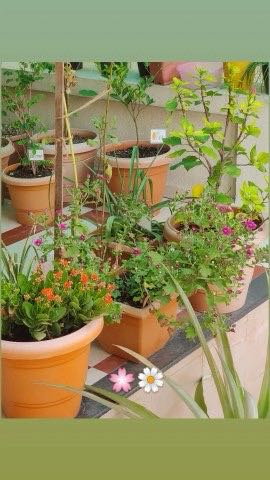

Jun 2020
Drag to look around · click a plant
During COVID we had open space at home but no land to dig, so the whole garden lived in pots. Over two years it went from bare soil to something close to a forest. Vegetables came first because they grow fast, flowers came along with them, and the fruit plants, slow and stubborn, came last. Scroll down to watch it grow. Everything here is rebuilt from my own photos and videos.

Drag to look around · click a plant
Every plant in the garden, with when it went in and its photos and videos.
Every photo and video I posted of the garden, oldest first.